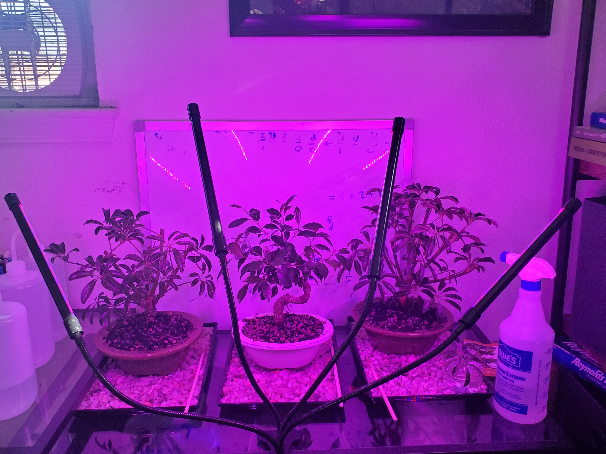

Profile
|
|
|
Name: |
Kevin Trungnghia Vo |
|
Email: |
KevinTVo@outlook.com |
Alumni: |
School of Computer Science and Engineering, California State University San Bernardino |
Major: |
Computer Science |
Degree: |
Bachelor of Science in Computer Science |
Class of: |
2020 |
Location: |
Riverside, California |
Repositories: |
https://github.com/ktvo |
|
Bio
I recently graduated from California State University San Bernardino with a bachelor in Computer Science. I enjoy working with others
to cooperatively contribute towards a common goal. What drew me to developing software are the pinnacle moments of finally correcting
a bug after hours of poking at it from different angles. The idea of someone enjoying the applications that I was/am a part of as it's
capable of facilitating their day or simply provide them joy would also be very satisfying for me.
My next ultimate goal is to become a full stack devloper to fully enjoy and be experienced in both the client and server side.
I also envisioned it to be invigorating as I could venture back and forth where those slight changes from time to time is enough
for it to be refreshing.
Languages Dealt With
- C/C++
- C#
- ARM Assembly
- LC3 Assembly
- Java
- Javascript
- PHP
- MySQL
- CSS
Courses Taken
CSUSB:
- CSE 5700 Compilers
- CSE 5500 Advanced Bioinformatics I: Sequence Analysis
- CSE 5160 Machine Learning
- CSE 5000 Introduction to Formal Languages and Automata Theory
- CSE 4880 Ethics Senior Seminar
- CSE 4550 Software Engineering
- CSE 4100 Computer Networking and Security
- CSE 594 Topics in Computer Science and Engineering: Wireless Sensor Networks
- CSE 572 Databases
- CSE 530 Data Communications
- CSE 460 Operating Systems
- CSE 456 Embedded Systems
- CSE 440 Game Design
- CSE 431 Algorithm Analysis
- CSE 401 Contemporary Computer Architecture
- CSE 330 Data Structures
- CSE 313 Machine Organization
- CSE 310 Digital Logic
- MATH 372 Combinatorics
- MATH 265 Statistics with Applications
- MATH 272 Discrete Mathematics
RCCD:
- CIS-18C Java Programming: Data Structures
- CIS-18A Java Programming: Objects
- CIS-17C C++ Programming: Data Structures
- CIS-17B C++ Programming: Advanced Objects
- CIS-17A Programming Concepts and Methodology II: C++
- CIS-11 Computer Architecture and Organization: Assembly
- CIS-7 Discrete Math
- CSC-5 Programming Concepts and Methodology I: C++
- CIS-1A Introduction to Computer Information Systems
- MAT-3 Linear Algebra
- MAT-2 Differential Equations
- MAT-1B Calculus II
- MAT-1A Calculus I
- PHY-4C Heat, Light and Waves
- PHY-4B Electricity and Magnetism
- PHY-4A Mechanics
Hobby

Admist COVID 19 I begun picking on the hobby of indoor bonsai keeping. It initially started to brighten up the mood in my room
but shortly grew on when as I saw potential once researching a couple of suitable trees. Currently, in my collect I have two
subtropical Schefflera arboricolas (Dwarf Hawaiian Umbrella Trees) and a Golden Gate Ficus as they are more suitable indoors.
I am still an extreme novice but my ultimate goal is to repot my two Scheffleras into a single pot to create a forest appearance.
I am also attempting to grow new Scheffleras from those trees' own stems so that forest can eventuall look fuller and distinctive.
Right now, I am misting and sealing the plants daily to provide a humid enough environment so that they all could sprout aerial
roots that will eventually stem down into the soil. Likewise, it is extremely cool that some trees in the wild can form a network
of connected trees through developed aerial roots that can propagate acres wide.
Experience
Fall 2019:
Within a 10-week course my team and I developed a Roleplaying Game that is a retro-2D arcade style spaceshooter using Unity 8.41 and C# that
ultimately won 3rd place out of 11 within the game developing competition that was hosted at CSU San Bernardino.
I was responsible for coding the attack and movement patterns for the enemy units along with the movement and special abilities for the player.
Together our team included an artist for the sprite assets and a musician/sound designer for the background music and SFX of the game. For the
rest of the group, we divided up the task where one person handles the spawning of enemy units,where a second teammate was responsible for the UI such
as the scoreboard and fuel meter for the player. We also had a third person handle the downward scrolling effect of the background. Lastly, the
final companion was incharge of the scoreboard and game menu.
Unfortunately, like nearly all of the other contestants we weren't about to complete the game to our expectations as our scoreboard, game menu, and fuel meter
were not completed. We also had to cut out our final boss as it began glitching after when we started implementing everyone's code into one project.
To be frank, it could had gone worst as this was my second rodeo working with a group for a massive project.
Since two years prior, for a different course, my other group was tasked with designing a browser-based blackjack game that caused a lot of headaches for the people
who remained. The reason for this was because our group of seven overtime became a group of three, so the few of us that remained were stuck with picking up all the pieces
by figuring out what people had already done before leaving the group. Our biggest fault within that project was that no one took initiative so everyone spent a lot of time
pondering indepently on what they should do. Finally, when the group got together and fully conversate, everyone was given a task. From this experience, I learned that someone
should step up and gently assign tasks while frequently ask questions on everyone's desire for the project and what aspect of the project are they most fond of. I also learned to
consistently repeat myself week-after-week that I would be happy to help them on their part or inform my teammates on whoeles within the team they should talk to when features of
our program collides. The discussion of the project's end goal was also a repeating topic.
From that, I was a bit more prepared on what to expert from creating a game within even a shorter amount of time. For my second group project I knew that above all we had to
create a working game that is also fun to ultimately provide an engaging experience for its players. After meeting some of my protential and soon-to-be partners, I began asking
all of them what kind of game they would like to develop. Luckily, every agreed on a challenging arcade style game that's space themed as it was a great start for less than 10-weeks.
Then we talked about what would make the game fun for the players. From the book provided within that course, we figured a start would to have the player be engaged by being busy with
the inputs from the keyboard. Therefore, we chose to spread out of keys on the keyboard as inputs as it would not provide an opportunity for the player to have a free hand and ultimately
become disinterested. Second, thing we believed that our game should have are flashy attacks and explosions along with fast-paced gameplay with little room for errors. Also a pumping
background music that we asked our musician to create was a deal for us. I wanted a rythmic, heavy-based techno song to provide urgency for the player while another teammate wanted
a Pokemon-like theme. In the end, immediately we compomised and decided to have the background music do both as completing the project in a timely manner took precedence.
Despite, me creating a Discord server for our team, it was still somewhat difficult to have everyone agree on the outcome of the game as I notice that many people would end up changing
their minds on certain game mechanics or don't remember our previous conversations. This took a lot of our time, but we overcame it. I find what best works is if we code together while on
VoIP. There would be a live discussion along with questions being asked while coding, and this was how we kept everyone motivated and on track.
By the end of the day I am extremely greatful for this experience as most of my teammates this time displayed great euthsiaium as we all had a say for the project. For the parts that weren't
completed such as the fuel bar, scoreboard, and game menu we ran out of time as fixing runtime bugs was our primary objective for the last couple of days. However, I felt that my mistakes
this time around was to not host VoIP coding sessions sooner as that was the best way to get everyone involved if some were just observing as it'd keep everyone closer to being on the same
page as everyone sees the game as it slowly consolidates.
Overall, the second time around was much less stressful for me as I tried to jump start on the project as soon as I can. As soon as I learn something new about C# and Unity, would immediately
implement it within the game whenever I'd get the chance. For example, I began by creating moving objects. Then implemented code player movement. Shortly after came the bullet script with
trigger boxes. From this, I learned about the importance of vectors and forces as there will be time where I would have to reset all of the forces upon a game entity back to zero as it would still
linger if left alone. This caused our player and enemy for shake rapidly while hindering their movement speed after shooting. After all of this be done, the rest became a blast for me as I was able
to reuse characteristics of one enemy unit into another to plan out what types of enemies such as how they would move or method of attacking.